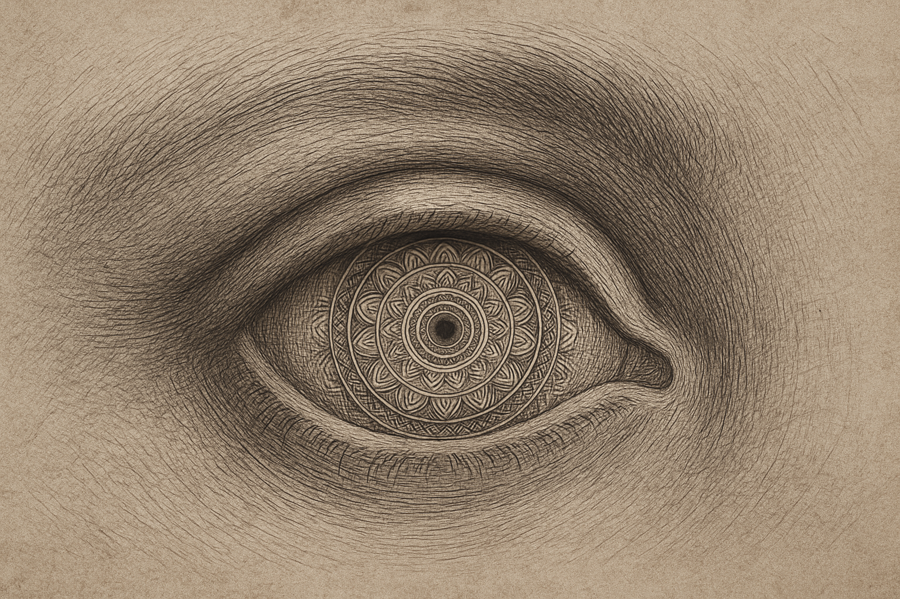
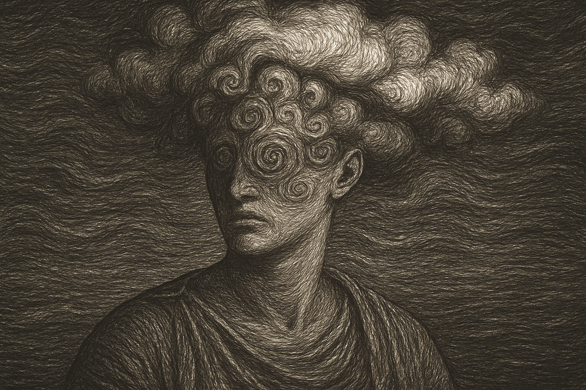
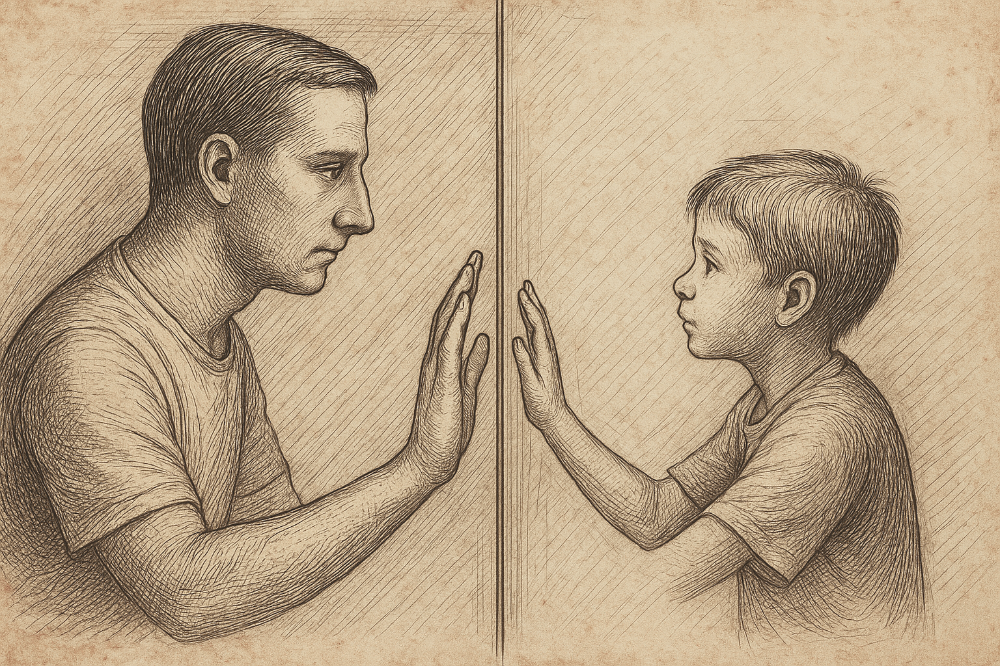
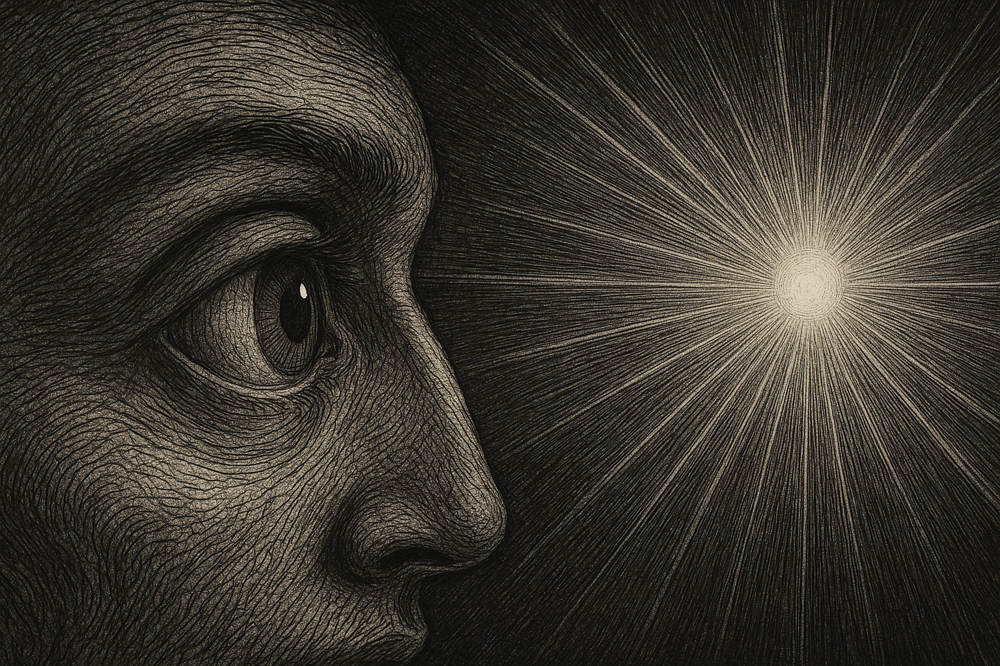

Encounters Within the Psychedelic Landscape
Each journey is unique. But recurring patterns reveal the architecture of the inner world. The psychedelic state does not create hallucinations—it reveals the mind stripped of its filters.
The Nature of the Experience
Psychedelic experiences are not predictable, repeatable events. They are emergent responses to internal conditions—psychological, emotional, and spiritual. Set (your mindset), setting (the environment), and substance interact to create a space where perception, emotion, and identity can undergo radical shifts.
While no two journeys are identical, certain phenomena consistently arise. We prepare you for the possibility—not the guarantee—of these encounters.
Common Psychedelic Phenomena
-
1. Altered Sense of Time and Space
Time may stretch, loop, dissolve. Physical boundaries dissolve. A minute can feel like a lifetime.
Purpose: Breaks attachment to control, invites surrender.
-

2. Visual and Auditory Shifts
Geometric patterns, color trails, enhanced perception of sound. Eyes closed: inner landscapes and symbolic visions.
Purpose: Aesthetic layer of the subconscious rising to the surface.
-
3. Emotional Catharsis
Grief, laughter, rage, love—often arising without external cause.
Purpose: Release and integration of repressed material.
-

4. Ego Dissolution
Loss of sense of "I". No boundaries between self and other. Awareness persists without identity.
Purpose: Freedom from habitual narratives; glimpse of non-dual consciousness.
-
5. Encounters with Archetypes or Entities
Some report meeting guides, ancestors, animals, or “presences.”
Purpose: Psychological projection, symbolic integration, or contact—interpretation varies.
-

6. Re-experiencing Past Events
Childhood memories, past traumas, or forgotten sensations may emerge.
Purpose: Allows for reframing, understanding, or resolution.
-

7. Insights and Realizations
Sudden clarity about relationships, behavior patterns, fears, life direction.
Purpose: Cognitive restructuring through direct awareness.
The Dark and the Light
Challenging Experiences (“The Descent”)
- Fear, disorientation, resistance
- Physical discomfort or nausea
- Confronting shadow material
- Temporary paranoia or looping thoughts
Transcendent Experiences (“The Return”)
- Peace beyond comprehension
- Connection to a greater whole
- Overflowing gratitude or love
- Rebirth, clarity, renewed purpose
Both are valid. Both are part of the path. Our role is to hold the container—so you can explore safely, knowing someone is there, not to steer, but to witness.
After the Trip – Integration
Psychedelic states may last hours. Their echoes last years. Without integration, even the most profound journey fades into abstraction. We help translate your experience into meaning and action, whether through structured dialogue, creative expression, or embodied practice.
A Note on Expectations
There is no guarantee of insight. Some trips are gentle. Some are silent. Some are void. The experience cannot be forced. It must be met with humility, patience, and respect.
“You do not go on a psychedelic journey to see something. You go to be seen—by something deeper, older, and far more honest than the self you carry every day.”